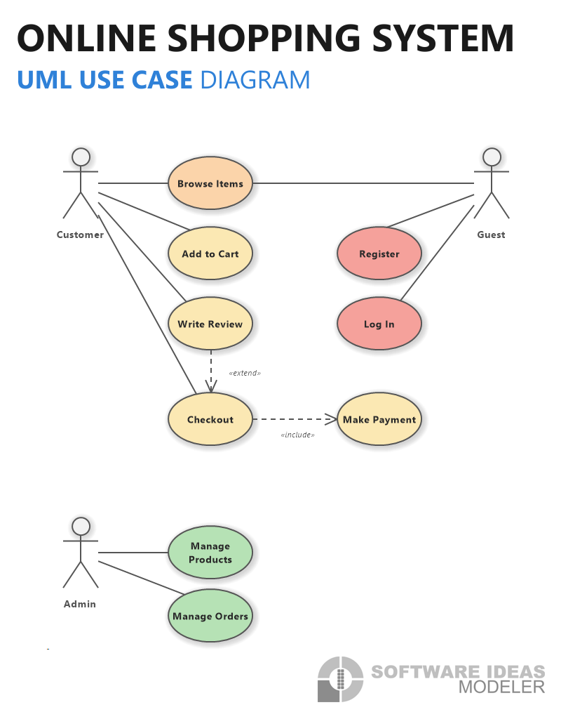
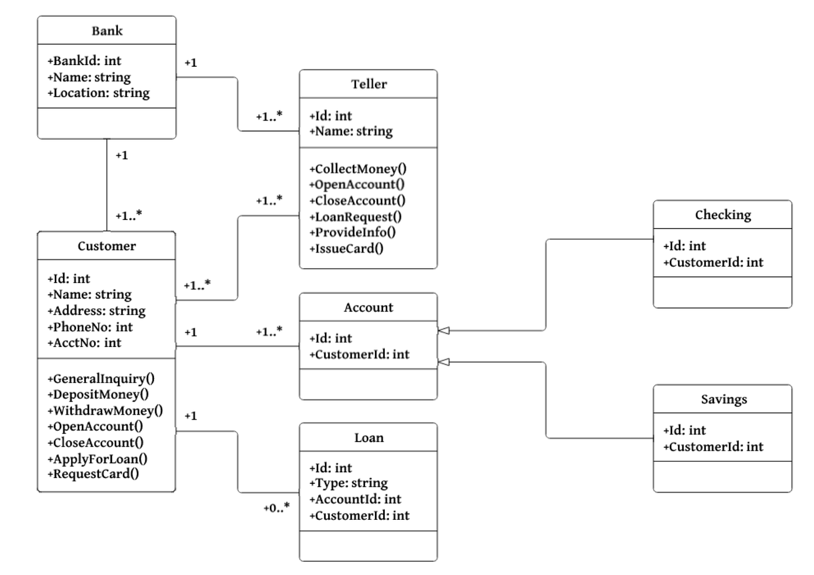
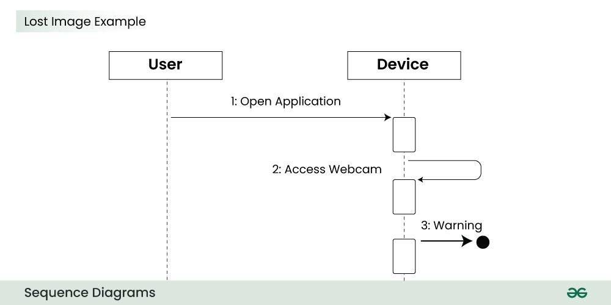

UML leht
Peatükid
Mis on UML?
UML on visuaalne keel, mida kasutatakse tarkvara ja süsteemide kirjeldamiseks,
kavandamiseks visualiseerimiseks ning dokumenteerimiseks. See võimaldab arendajatel
ja analüütikutel kujutada süsteemi ülesehitust ja tööd
UML ja flowchart lingid:
Case diagramm
Case diagramm ehk kasutusjuhtumi diagramm on visuaalne viis näidata, kuidas kasutajad süsteemiga suhtlevad
ja milliseid funktsioone süsteem pakub. See aitab mõista süsteemi käitumist kasutaja vaatenurgast.
Seletused:
- Aktor – süsteemi kasutaja või väline süsteem
- Ovaal – kasutusjuhtum ehk tegevus
- Joon – ühendab kasutaja tegevusega
- <<include>> – näitab kohustuslikku tegevust
- <<extend>> – näitab lisafunktsiooni

Class diagramm
Klassidiagramm kirjeldab süsteemi struktuuri ning näitab klasse, nende omadusi, meetodeid ja omavahelisi seoseid.
See aitab meeskonnal mõista, kuidas süsteem on korraldatud ja kuidas komponendid omavahel suhtlevad
Seletused:
- Ristkülik – klass
- Ülemine osa – klassi nimi
- Keskmine osa – atribuudid
- Alumine osa – meetodid
- Jooned nooltega – klasside vahelised suhted

Sequence diagramm
Sequence diagramm ehk järjestusdiagramm näitab objektide vahelist suhtlust ajateljel ning kirjeldab tegevuste või sõnumite järjekorda
Seletused:
- Ristkülik ülal – objekt või osaleja
- Vertikaalne katkendlik joon – objekti elujoon
- Horisontaalne nool – sõnum või tegevus
- Aktiveerimisriba – tegevuse kestus

State diagramm
State diagramm ehk Olekudiagramm kuvab objektide olekuid, ning nende vahelisi üleminekuid, näitab kuidas objektide olekud muutuvad erinevatel tulemustel
Seletused
- Täidetud ring – alguspunkt
- Ümardatud ristkülik – olek
- Nool – üleminek järgmisse olekusse
- Topeltring – lõppolek

Activity diagramm
Activity diagramm ehk tegevusdiagramm aitab visualiseerida süsteemi töövooge, protsesse või tegevusi. Need kujutavad, kuidas erinevad toimingud on omavahel seotud ja kuidas süsteem ühest olekust teise liigub

Kasutatatud lingid
- https://www.geeksforgeeks.org/system-design/use-case-diagram/
- https://www.geeksforgeeks.org/system-design/unified-modeling-language-uml-class-diagrams/
- https://www.geeksforgeeks.org/system-design/unified-modeling-language-uml-sequence-diagrams/
- https://www.geeksforgeeks.org/system-design/unified-modeling-language-uml-activity-diagrams/
- https://www.softwareideas.net/a/1897/how-to-create-a-use-case-diagram-a-step-by-step-guide
- https://medium.com/@smagid_allThings/uml-class-diagrams-tutorial-step-by-step-520fd83b300b
- https://www.geeksforgeeks.org/system-design/unified-modeling-language-uml-sequence-diagrams/
- https://t2informatik.de/en/smartpedia/state-diagram/
- https://www.visual-paradigm.com/guide/uml-unified-modeling-language/what-is-activity-diagram/
piltide lingid: